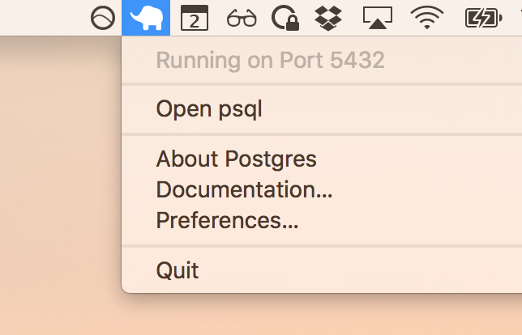

In this article, I show you how to setup Sails.js.
Visit https://nodejs.org and download the
LTS version of Node. At the time of writing this was v.4.4.5 LTS.
Follow the installer to completion.
Once completed open up Terminal and check your node version.
node -v
Download Postgres.app onto your machine and follow the installation process.
Once installed, open the psql command.
Then, create the database.
CREATE DATABASE yourapp_development;
sudo npm -g install sails
Create a project.
sails new yourapp
Enter the project and install postgresql.
npm install sails-postgresql --save
Open config/connections.js and add the following to the end of
the file.
postgresDevelopment: {
adapter: 'sails-postgresql',
url: 'postgres://postgres@localhost/yourapp_development',
ssl: false
}
Good. Next open config/models.js, uncomment the
connection: line, and set to postgresql.
connection: 'postgresDevelopment',
Save those changes and start the app.
cd yourapp
npm start
Visit http://localhost:1337
You're all set. You have a good foundation for building out your Sails.js application.